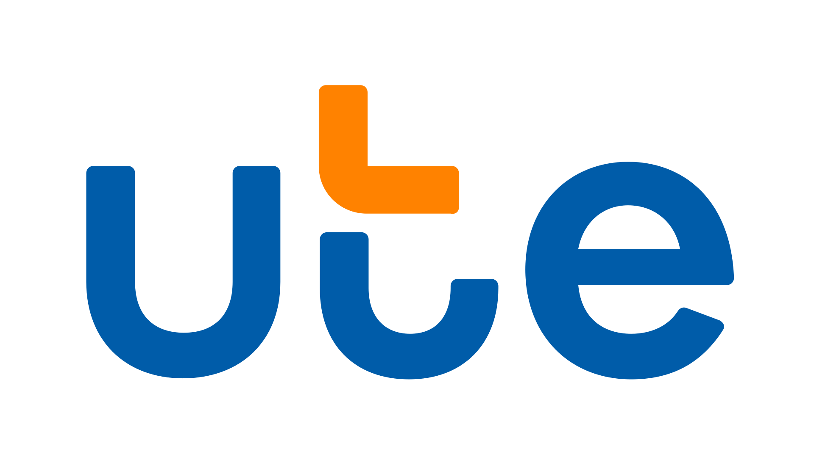

Iniciativa UTE
Estación Sostenible
Descubre nuestra estación diseñada para recolectar tapitas, recuperarlas y convertirlas en nuevos productos de alto valor, fomentando la economía circular junto a UTE.
Tu aporte ecológico
recuperado
ahorrada
evitado
reciclado
Proyecto de fabricación 100% Uruguaya, utilizando plásticos recuperados de tapitas plásticas para garantizar la economía circular.
Comparte el impacto
Celebramos el compromiso de UTE con un futuro más sustentable. Comparte el video de la creación de tu premio con tu red para inspirar a otras instituciones a sumarse a la economía circular. ¡No olvides etiquetarnos (@UTE_Uruguay y @circula.uy) para celebrar juntos!